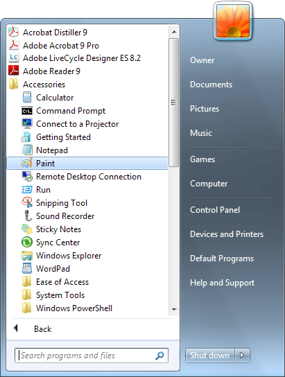

Free
computer Tutorials
|
Free
computer Tutorials
|
|
 back back |
Stay at Home and Learn | ||||
How to Take ScreenshotsIn this lesson you'll learn how to take a screenshot, and how to crop that image down to size. For example, suppose you were getting an error message on screen and wanted to send it to us to see if we could help. Instead of typing the error message, or trying to explain it, you could take a screenshot, crop to reduce the file size, and then insert the image into your email. Here's how. First, you need to locate the Prt Scrn button on your keyboard. This stands for Print Screen, and is usually located on the right hand side of a standard keyboard, just above the Insert, Home and Page Up keys. However, if you have a laptop, the Prt Scrn button can be hard to locate. Look in the very top right of your keypad. Not only that, you may have to hold down your laptop's function key first, which is usually found in the bottom left of the keypad. Press the Print Screen button once on a PC, or use the Function Key > Print Screen combination on a laptop. This will copy whatever you see on your screen to the computer's memory. Once the screen is in the computer's memory it can be pasted into an image editor for manipulation. The image editor we'll use is Paint. This has been much improved with Windows 7 and can be found by clicking your Start button. From the Start menu click All Programs at the bottom: Now click on Accessories, and Paint:  When Paint starts up, click the Paste button at the top: The image you captured on the desktop should now appear in the main viewing area. If it doesn't, it means you haven't captured the image. So try pressing your "Prt Scrn" button again. You now need isolate just that part of the image you're interested in. After all, there's no sense in sending anyone the whole of the screen when you only want to capture the error message. To isolate just part of the screen, click the Select
button on the Paint toolbar: Now move your mouse back on to your image. The cursor should have changed shape. Hold down your left mouse button on the top left of whatever it is you're trying to capture. Keep your left mouse button held down and drag to the bottom right. In the image below, we're trying to isolate some code and the error message: Unfortunately, Paint is not very good when it comes to resizing a selected area. You might think the white squares are sizing handles. But if you hold your mouse over one and try to drag to a new position it will cut and move the image instead. It's better if you press the Select button again. This will deselect your chosen area, and you can have another go. If you accidentally move your selected area, click the Undo icon at the very top left of Paint: Once you have a selection, right-click this area and you'll see a menu appear. Select Crop, and the image will shrink to your selected area: Paint is also not very good at refining the cropped area, either. If you want better screenshots then you would need a decent image editor like the free Gimp (which is quite hard to use). Photoshop Elements is also a very good image editor, and is well worth paying money for. The best professional image editor is Photoshop, (Elements is a stripped down version of this), but it's quite expensive. For quick screenshots and basic cropping, however, Paint should be fine.
Once you have cropped your image down to size, you can
save it by clicking the dropdown menu at the top: From the menu, select Save As to see the following options: As you can see, there is a bewildering array of options! If you want to keep the file size down to a minimum, use GIF or PNG. (GIF is the more common of the two.) For better quality images, but large file sizes, use JPEG. If you're sending somebody a screenshot in an email, GIF is the better option. But you should now know how to take a screenshot, and crop the image in Microsoft Paint.
|
|||||
|